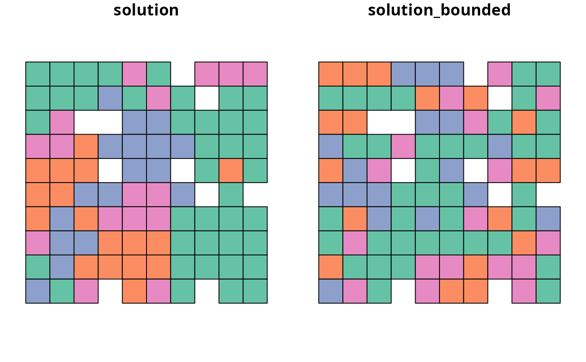
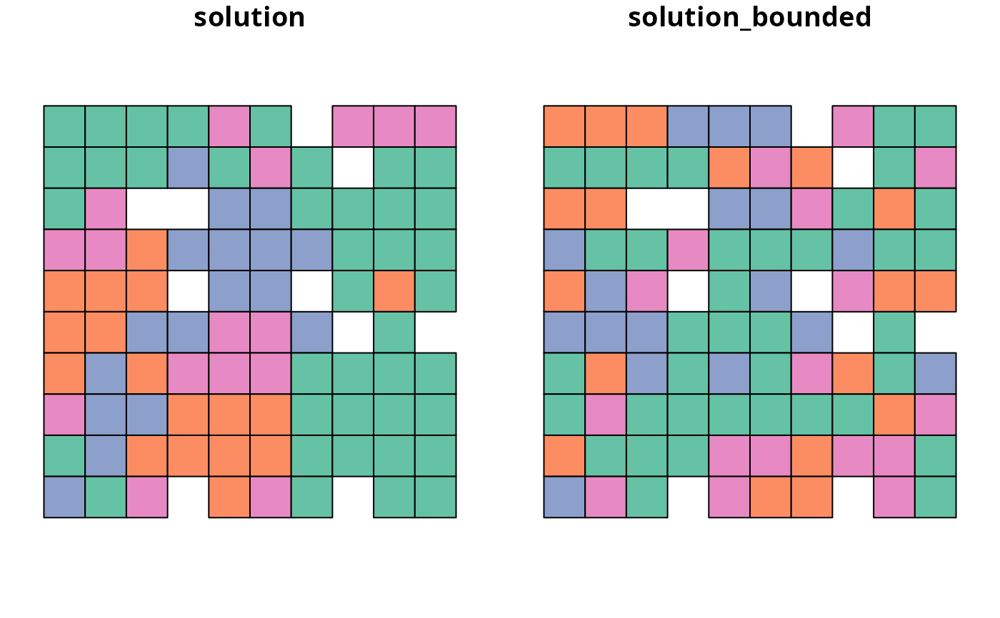

Add manually specified bound constraints
Source:R/add_manual_bounded_constraints.R
add_manual_bounded_constraints.RdAdd constraints to a conservation planning problem to ensure
that the planning unit values (e.g., proportion, binary) in a solution
range between specific lower and upper bounds. This function offers more
fine-grained control than the add_manual_locked_constraints()
function and is is most useful for problems involving proportion-type
or semi-continuous decisions.
Usage
add_manual_bounded_constraints(x, data)
# S4 method for class 'ConservationProblem,data.frame'
add_manual_bounded_constraints(x, data)
# S4 method for class 'ConservationProblem,tbl_df'
add_manual_bounded_constraints(x, data)Arguments
- x
problem()object.- data
data.frameortibble::tibble()object. See the Data format section for more information.
Value
An updated problem() object with the constraints added to it.
Data format
The argument to data should be a data.frame with the following columns:
- pu
integerplanning unit identifiers. Ifxhasdata.frameplanning units, then these values must refer to values in theidcolumn of the planning unit data. Alternatively, ifxhassf::st_sf()ormatrixplanning units, then these values must refer to the row numbers of the planning unit data. Additionally, ifxhasnumericvector planning units, then these values must refer to the element indices of the planning unit data. Finally, ifxhasterra::rast()planning units, then these values must refer to cell indices.- zone
characternames of zones. Note that this argument is optional for arguments toxthat contain a single zone.- lower
numericlower values. These values indicate the minimum value that each planning unit can be allocated to in each zone in the solution.- upper
numericupper values. These values indicate the maximum value that each planning unit can be allocated to in each zone in the solution.
See also
See constraints for an overview of all functions for adding constraints.
Other constraints:
add_contiguity_constraints(),
add_feature_contiguity_constraints(),
add_linear_constraints(),
add_locked_in_constraints(),
add_locked_out_constraints(),
add_mandatory_allocation_constraints(),
add_manual_locked_constraints(),
add_neighbor_constraints()
Examples
# \dontrun{
# set seed for reproducibility
set.seed(500)
# load data
sim_pu_polygons <- get_sim_pu_polygons()
sim_features <- get_sim_features()
sim_zones_pu_polygons <- get_sim_zones_pu_polygons()
sim_zones_features <- get_sim_zones_features()
# create minimal problem
p1 <-
problem(sim_pu_polygons, sim_features, "cost") %>%
add_min_set_objective() %>%
add_relative_targets(0.2) %>%
add_binary_decisions() %>%
add_default_solver(verbose = FALSE)
# create problem with locked in constraints using add_locked_constraints
p2 <- p1 %>% add_locked_in_constraints("locked_in")
# create identical problem using add_manual_bounded_constraints
bounds_data <- data.frame(
pu = which(sim_pu_polygons$locked_in),
lower = 1,
upper = 1
)
p3 <- p1 %>% add_manual_bounded_constraints(bounds_data)
# solve problems
s1 <- solve(p1)
s2 <- solve(p2)
s3 <- solve(p3)
# create object with all solutions
s4 <- sf::st_sf(
tibble::tibble(
s1 = s1$solution_1,
s2 = s2$solution_1,
s3 = s3$solution_1
),
geometry = sf::st_geometry(s1)
)
# plot solutions
## s1 = none locked in
## s2 = locked in constraints
## s3 = manual bounds constraints
plot(s4)
 # create minimal problem with multiple zones
p5 <-
problem(
sim_zones_pu_polygons, sim_zones_features,
c("cost_1", "cost_2", "cost_3")
) %>%
add_min_set_objective() %>%
add_relative_targets(matrix(runif(15, 0.1, 0.2), nrow = 5, ncol = 3)) %>%
add_binary_decisions() %>%
add_default_solver(verbose = FALSE)
# create data.frame with the following constraints:
# planning units 1, 2, and 3 must be allocated to zone 1 in the solution
# planning units 4, and 5 must be allocated to zone 2 in the solution
# planning units 8 and 9 must not be allocated to zone 3 in the solution
bounds_data2 <- data.frame(
pu = c(1, 2, 3, 4, 5, 8, 9),
zone = c(rep("zone_1", 3), rep("zone_2", 2), rep("zone_3", 2)),
lower = c(rep(1, 5), rep(0, 2)),
upper = c(rep(1, 5), rep(0, 2))
)
# print bounds data
print(bounds_data2)
#> pu zone lower upper
#> 1 1 zone_1 1 1
#> 2 2 zone_1 1 1
#> 3 3 zone_1 1 1
#> 4 4 zone_2 1 1
#> 5 5 zone_2 1 1
#> 6 8 zone_3 0 0
#> 7 9 zone_3 0 0
# create problem with added constraints
p6 <- p5 %>% add_manual_bounded_constraints(bounds_data2)
# solve problem
s5 <- solve(p5)
s6 <- solve(p6)
# create two new columns representing the zone id that each planning unit
# was allocated to in the two solutions
s5$solution <- category_vector(sf::st_drop_geometry(
s5[, c("solution_1_zone_1","solution_1_zone_2", "solution_1_zone_3")]
))
s5$solution <- factor(s5$solution)
s5$solution_bounded <- category_vector(sf::st_drop_geometry(
s6[, c("solution_1_zone_1", "solution_1_zone_2", "solution_1_zone_3")]
))
s5$solution_bounded <- factor(s5$solution_bounded)
# plot solutions
plot(s5[, c("solution", "solution_bounded")], axes = FALSE)

# }
# create minimal problem with multiple zones
p5 <-
problem(
sim_zones_pu_polygons, sim_zones_features,
c("cost_1", "cost_2", "cost_3")
) %>%
add_min_set_objective() %>%
add_relative_targets(matrix(runif(15, 0.1, 0.2), nrow = 5, ncol = 3)) %>%
add_binary_decisions() %>%
add_default_solver(verbose = FALSE)
# create data.frame with the following constraints:
# planning units 1, 2, and 3 must be allocated to zone 1 in the solution
# planning units 4, and 5 must be allocated to zone 2 in the solution
# planning units 8 and 9 must not be allocated to zone 3 in the solution
bounds_data2 <- data.frame(
pu = c(1, 2, 3, 4, 5, 8, 9),
zone = c(rep("zone_1", 3), rep("zone_2", 2), rep("zone_3", 2)),
lower = c(rep(1, 5), rep(0, 2)),
upper = c(rep(1, 5), rep(0, 2))
)
# print bounds data
print(bounds_data2)
#> pu zone lower upper
#> 1 1 zone_1 1 1
#> 2 2 zone_1 1 1
#> 3 3 zone_1 1 1
#> 4 4 zone_2 1 1
#> 5 5 zone_2 1 1
#> 6 8 zone_3 0 0
#> 7 9 zone_3 0 0
# create problem with added constraints
p6 <- p5 %>% add_manual_bounded_constraints(bounds_data2)
# solve problem
s5 <- solve(p5)
s6 <- solve(p6)
# create two new columns representing the zone id that each planning unit
# was allocated to in the two solutions
s5$solution <- category_vector(sf::st_drop_geometry(
s5[, c("solution_1_zone_1","solution_1_zone_2", "solution_1_zone_3")]
))
s5$solution <- factor(s5$solution)
s5$solution_bounded <- category_vector(sf::st_drop_geometry(
s6[, c("solution_1_zone_1", "solution_1_zone_2", "solution_1_zone_3")]
))
s5$solution_bounded <- factor(s5$solution_bounded)
# plot solutions
plot(s5[, c("solution", "solution_bounded")], axes = FALSE)

# }